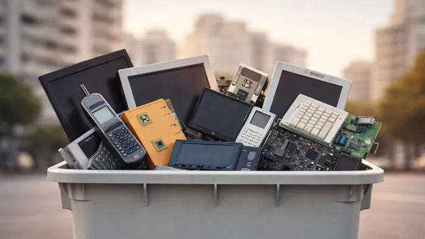

Reportar una incidencia
Contenedor desbordado, dañado o fuera de servicio. No necesitás registrarte.
Reportar ahora
Solicitar retiro de residuos especiales
Poda, residuos electrónicos, escombros, muebles y otros residuos que no van al contenedor común.
Solicitar retiroRealizar una consulta
¿Tenés una duda o un comentario para el municipio? Escribinos, no hace falta tener cuenta.
Enviar consulta